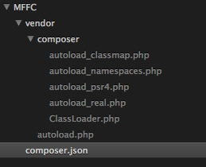

利用 Composer 一步一步构建自己的 PHP 框架（一）——基础准备
『Composer 一统天下的时代已经到来！』——白岩松
“一个时代结束了，另一个时代开始了。”
Framework Interoperability Group（框架可互用性小组），简称 FIG，成立于 2009 年。FIG 最初由几位知名 PHP 框架开发者发起，在吸纳了许多优秀的大脑和强健的体魄后，提出了 PSR-0 到 PSR-4 五套 PHP 非官方规范：
1. PSR-0 (Autoloading Standard) 自动加载标准
2. PSR-1 (Basic Coding Standard) 基础编码标准
3. PSR-2 (Coding Style Guide) 编码风格向导
4. PSR-3 (Logger Interface) 日志接口
5. PSR-4 (Improved Autoloading) 自动加载优化标准
之后，在此标准之上，Composer 横空出世！Composer 利用 PSR-0 和 PSR-4 以及 PHP5.3 的命名空间构造了一个繁荣的 PHP 生态系统。Composer 类似著名的 npm 和 RubyGems，给海量 PHP 包提供了一个异常方便的协作通道，Composer Hub 地址：https://packagist.org/。Composer 中文网站：http://www.phpcomposer.com/。
目前 PHP 界风头正劲的 Laravel 和 Symfony 均直接基于 Composer，大家耳熟能详著名框架 CI 和 Yii 的正开发版本 CodeIgniter 3 和 Yii 2 也都基于 Composer（更新：北京时间2014年10月13日 Yii 2 已经发布）。Composer 就是 PHP 框架的未来，有了它，让 CI 的路由和 Laravel 的 Eloquent ORM 协作就会变的非常简单。
PHP 语言本身就带有强大的网络功能、文件管理功能和丰富的系统 API，Composer 也只是一段 PHP 脚本而已。可以使用
php composer.phar update
直接调用。
在合适的地方新建一个文件夹，命名为 MFFC（My First Framework based on Composer），在文件夹下新建文件 composer.json：
{
"require": {
}
}命令行切换到 MFFC 目录下，运行：
composer update
稍等片刻，会出现如下文件及文件夹：

如果以上内容成功出现，恭喜你，Composer 初始化成功！
下一步：利用 Composer 一步一步构建自己的 PHP 框架（二）——构建路由
评论：

2015-12-02 14:11
<?php
use NoahBuscher\Macaw\Macaw;
Macaw::get('fuck', function() { //执行到这儿就错了，看您的文档是说伪静态的问题，我下载了你的教程和你开发的小框架也是不行的，不是404就是500， 访问http://host-8/报500,访问http://host-8/index.php/fuck也报500,访问http://host-8/fuck报404，在入口文件phpinfo()也是ok的。我的环境mac下的mamp（apache+php5.6）,求传授大招，我看了大家说关于404的问题，我一一试了也不行。
echo "成功！";
});
Macaw::get('(:all)', function($fu) {
echo '未匹配到路由<br>'.$fu;
});
Macaw::dispatch();